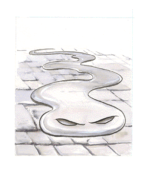

Ooze/Slime/Jelly

| Slithering Tracker
|
CLIMATE/TERRAIN:
| Subterranean
|
FREQUENCY:
| Rare
|
ORGANIZATION:
| Solitary
|
ACTIVITY CYCLE:
| Any
|
DIET:
| Living plasma
|
INTELLIGENCE:
| Average (8-10)
|
TREASURE:
| C
|
ALIGNMENT:
| Neutral
|
NO. APPEARING:
| 1
|
ARMOR CLASS:
| 5
|
MOVEMENT:
| 12
|
HIT DICE:
| 5
|
THAC0:
| 15
|
NO. OF ATTACKS:
| 1
|
DAMAGE/ATTACK:
| Nil
|
SPECIAL ATTACKS:
| Paralyzation
|
SPECIAL DEFENSES:
| Transparency
|
MAGIC RESISTANCE:
| Nil
|
SIZE:
| S (3' long)
|
MORALE:
| Champion 15
|
XP VALUE:
| 975
|
Slithering trackers are transparent, plasma-draining jellies found in many
dungeons and other dark places.
They are not invisible per se, but are instead made of a transparent
jelly-like material. Thus they are almost impossible to detect normally (only a 5%
chance of happening to notice one).
Combat: The unique nature of slithering trackers gives them the distinct advantage of
being able to slip through cracks and holes as small as a rat hole. They move
completely silently across all surfaces, simply oozing slowly over all bumps and
turns. They prefer to attack sleeping, solitary, or unconscious creatures, as
their main weakness lies in the extended duration of their attack form. They
secrete a paralyzing substance that immobilizes the victim on contact for 12
hours if a saving throw vs. paralyzation fails. The slithering tracker then covers
the entire body of its victim and slowly draws all of the plasma from the
creature (killing the victim in the process, of course). It can drain a man-sized
creature in one hour.
Habitat/Society: Slithering trackers are solitary beasts. Since they possess no attack form
capable of harming other trackers, territoriality is a question of first-come,
first-serve. Being the most intelligent of all slimes and jellies, it would seem
natural that slithering trackers would establish themselves as the leaders of
the rest. But jellies and slimes lack both the means of communication and the
intelligence to band together. They remain on the lower end of the monster food
chain, serving as scavengers that kill the weak and stupid, leaving the larger
creatures for major predators in the dungeons they inhabit.
In fact, slithering trackers often hide themselves in the lairs of large
monsters, which are known to kill far more than they can eat at a sitting. The
tracker waits until the beast goes to sleep or departs and then it sucks dry the
morsels left over. Many times the victims are merely unconscious instead of dead
-- at least until the tracker gets to them. And on more than one occasion,
monster-slaying players have left a hoard guarded by a comrade, while they go for
help, only to return to find their friend mysteriously dehydrated, with all of
the treasure still in the lair.
Ecology: There are two theories regarding the origin of slithering trackers. The first
and most likely one is that slithering trackers are just advanced forms of the
other jellies, fortunate enough to have developed a transparent plasma body and
a modicum of intelligence. Like most jellies, they reproduce asexually when
the time and quantity of food allow for it.
The second, more dubious theory, is that slithering trackers were created, not
born. Their high intelligence seems to lead many knowledgeable sages to
believe that the creation of a slithering tracker is a hideous process, involving the
transformation of a living human being. Certain legends seem to support this
assertion, as there are many accounts of dark wizards removing the bones of
their enemies, turning them into hulking masses of jelly-like flesh. While it is
certain that no respectable wizard (good or neutrally aligned) would resort to
creating such horrors, it is just as certain that there are many practitioners
of the darker arts who have performed much worse experiments.
It is possible that somewhere deep in the bowels of some long-deserted
wizard's dungeon, there lies an ancient diary, with a detailed account of the
terrifying curse of the tracker.
There are tales of abnormally large slithering trackers that live in the deep
recesses of the Underdark. Such monsters are often said to lurk around the
edges of great underground civilizations, growing to vast size on the abundance of
prey.
Index